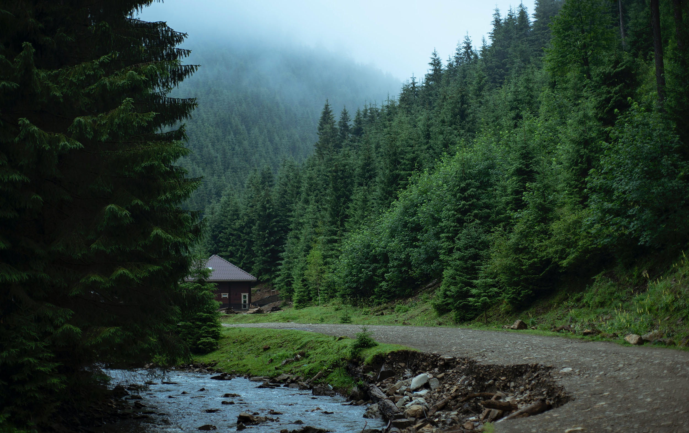

Темп на кожен день
- Пʼятниця: підйом лісом, вечеря біля притулку.
- Субота: полонини та оглядовий відрізок уздовж гребеня.
- Неділя: спуск іншим схилом до струмка й повернення.
В кожному дні - запас часу на фото, чай і розмови.

Старт у долині туману, вихід до світла на полонині, далі - стежка між смереками,
яка веде до оглядового мису. Тут легко замінити ділянку, якщо погода зміниться.
- Класичний трек: 6 км + 7 км + 5 км.
- Доступні варіанти з коротшим спуском у разі дощу.
- GPS-трек та паперова карта - обовʼязково у рюкзаку.
Дистанції
- Підйом до полонини - 380 м набору, 2:10 год.
- Гребінь до огляду - 120 м набору, 1:30 год.
- Спуск до струмка - 450 м скиду, 1:50 год.
Розрахунок зроблено для темпу 3–3.5 км/год.